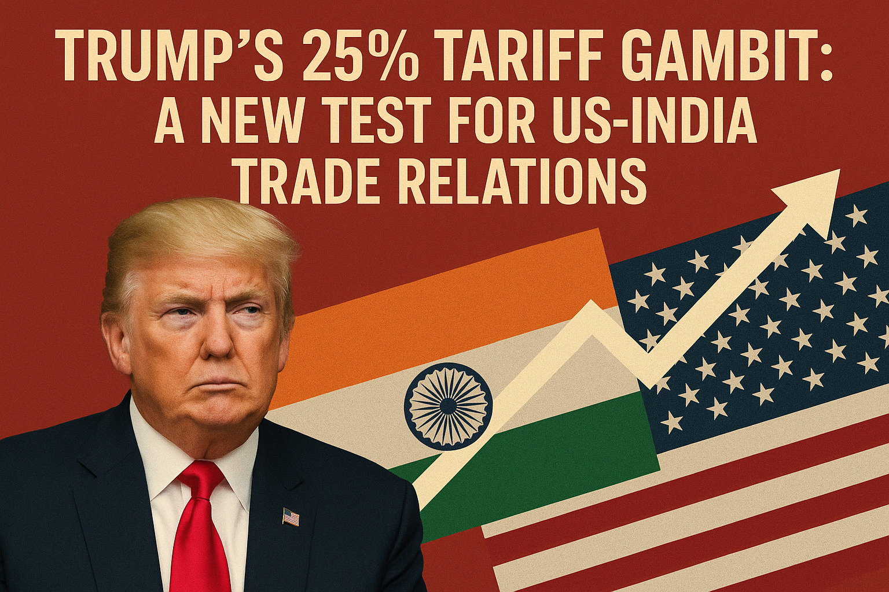

By Kashif Kamar
In a move that has intensified the global trade discourse, United States President Donald Trump has imposed a 25% tariff on imports from India, scheduled to take effect on August 1, 2025. This significant economic measure is compounded by an additional, yet undefined, "penalty," creating a cloud of uncertainty for Indian businesses and the broader strategic partnership between the two nations. The announcement, part of Trump's "Liberation Day" trade strategy, aims to reconfigure American trade partnerships through what he describes as more reciprocal arrangements.
President Trump articulated his reasons for the new tariffs on the social media platform Truth Social. The justifications center on several key complaints against India's trade and foreign policies:
The Indian government has responded cautiously, studying implications and stressing its commitment to a fair bilateral trade agreement. The Ministry of Commerce and Industry emphasized protection of national interests and ongoing negotiations despite the setback of a now unlikely "mini-deal". Talks are expected to continue with a U.S. delegation visiting New Delhi in late August.
The tariffs are expected to affect $87 billion worth of Indian exports. Experts weigh in:
As the August deadline approaches, the future of India-U.S. trade relations remains uncertain. However, continued dialogue offers hope for resolution and renewed cooperation.